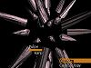

PC 64k
| 1 (445 pts) Totraum 209 Purge |
|
| 2 (356 pts) Spotlight Funk! |
||||
|
Tres belle intro. Tout se passe dans une sorte de mine. La camera se ballade constamment dans une piece ou des spots produisent des eclairages mouvant. Il y a meme un gobos. L'application des textures (plutot classiques, mais bon on est dans une mine) est particulierement bien soignee. |
| 3 (143 pts) Velvet 4 Fatal Justice |
|
| 4 (99 pts) Ah! Pulse |
|
Tres belle intro de la part de la section polonaise de Pulse. Elle consiste en 3 scenes raytracees de toute beautee (attention a ne pas regarder la demo sous win95, sous peine de subir un gros probleme de synchro). Le raytracing demandant enormement de temps machine, la scene est rendue en basse resolution et interpolee en 640x480x16bits (interpolation qui donne un effet de "wavelet" assez esthetique). Le tout est accompagnee d'une tres belle musique. |
|
| 9 (28 pts) Warp-Act 2 Pulpe |
 |
|
Cette intro figure ici malgres sa neuvieme place pour deux raisons. Tout d'abord elle est pas mal du tout et ensuite les organisateurs on malencontreusement balance une intox dans les hauts-parleurs au moment du passage de la demo... |